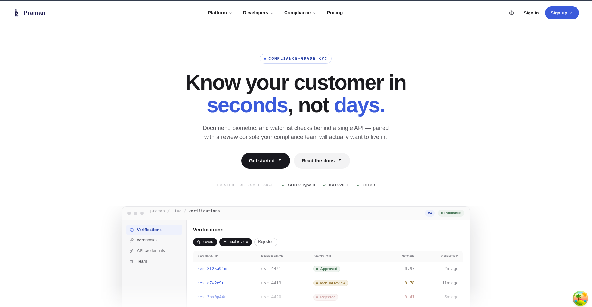
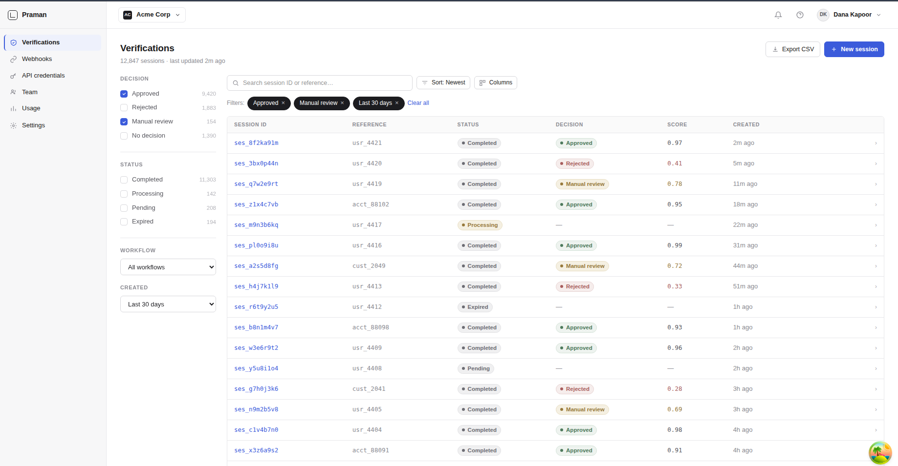
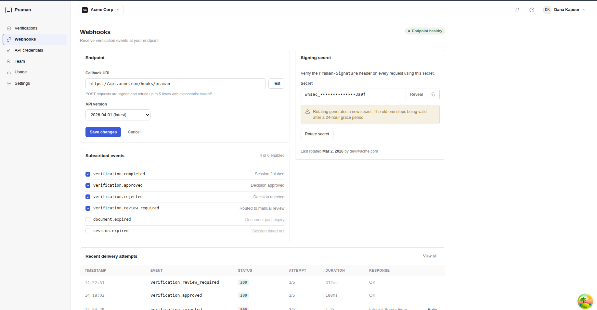
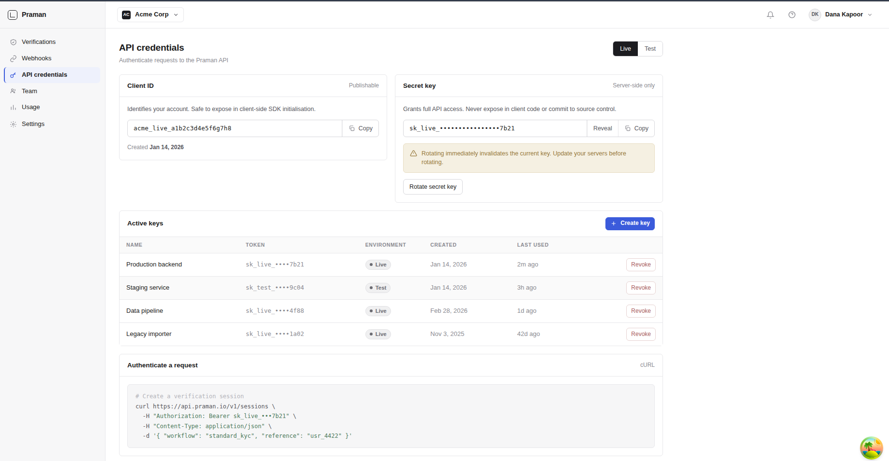
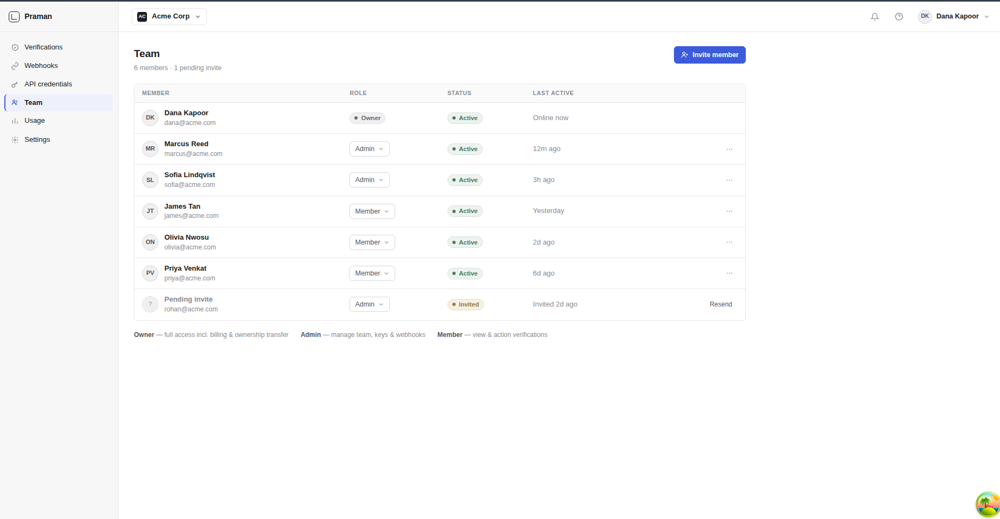
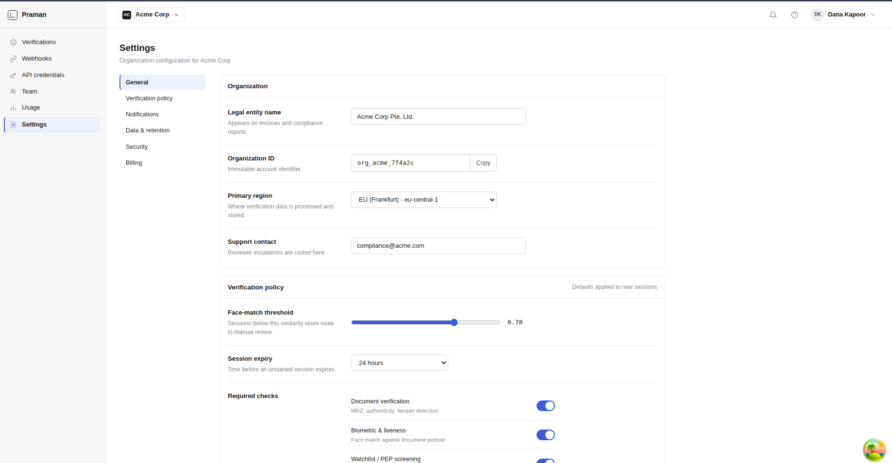

×

Identity Verification as a Service
A multi-tenant, event-driven KYC platform that lets fintech clients verify their end users' identities through a single API. It issues a verification session, hosts the document and selfie capture flow, runs OCR and face-matching off the request path, applies a decision, and reports the result back through a signed webhook.

Praman ("proof" in Sanskrit) is a production-shaped KYC verification platform — a backend systems project built to demonstrate distributed, event-driven architecture end to end.
Provide Know-Your-Customer identity verification as a service. Third-party applications (tenants) integrate once and verify their users' identities — document, biometric, and decision — without building any of it themselves.
The verification pipeline runs entirely off the HTTP request path. Tenants get an immediate session response and the final result later via webhook. Kafka decouples every slow step, so no thread blocks on OCR or face-matching.
All tenants share one database and schema; every
tenant-owned table carries a tenant_id
discriminator. Isolation is enforced at the
application layer and, where enabled, by PostgreSQL
Row-Level Security.
A long-running verification saga orchestrated across Java services and Python ML workers — fanning out OCR and face checks, collecting results idempotently, and running a decision engine, all coordinated over Kafka.
Each box is a separately deployed unit. Spring Boot services and Python workers communicate over Kafka for the pipeline; synchronous calls are used only where a request needs an immediate answer.
Single entry point on Spring Cloud Gateway. Validates
the Keycloak JWT, applies rate limiting and routing,
resolves tenant_id from the token and
injects it downstream as a trusted header.
Owns the KYC session lifecycle. Creates sessions,
issues the hosted verification URL + QR + short-lived
upload token, accepts end-user uploads to MinIO, and
emits documents.received.
The saga orchestrator. Consumes
documents.received, fans out OCR + face
work, collects results, runs the decision engine, and
emits verification.completed.
Consumes verification.completed, delivers
an HMAC-signed webhook to the tenant callback URL,
retries with backoff, and dead-letters on exhaustion.
A Kafka consumer loop. Pulls the document image from
MinIO, preprocesses with OpenCV, runs PaddleOCR,
extracts MRZ/fields, and emits
ocr.completed.
Same consumer shape. Computes a face-match score (doc
portrait vs selfie) and passive liveness behind a
clean interface, emitting face.completed.
Spring Cloud Config serves Git-backed externalized configuration; Eureka provides service discovery and client-side load balancing for the Java services.
Identity & access management. M2M clients (Client Credentials), dashboard users (Auth Code + PKCE), and OTP/MFA — no rolled-your-own auth.
The asynchronous backbone. Topics keyed by
sessionId preserve per-session ordering;
consumer groups, idempotency and a DLQ keep the
pipeline reliable.
Postgres is the multi-tenant shared-schema datastore; MinIO (S3-compatible) holds the large, sensitive document and selfie images, encrypted at rest.
Loki for logs, Prometheus for metrics, Tempo for traces — collected by Grafana Alloy and unified in Grafana dashboards and alerts.
Inside Verification: checks name match, face-score threshold, liveness, document expiry and number sanity to produce APPROVED / REJECTED / MANUAL_REVIEW.
Tenant backend ──(JWT)──▶ GATEWAY ──lb://──▶ SESSION ──┐
│ │ stores image
│ resolves tenant_id ▼
End user ──(upload token)─────┘ MinIO
│
kyc.documents.received ◀──────────┘
│ (Kafka)
▼
VERIFICATION ──┬─▶ kyc.ocr.requested ─▶ OCR WORKER (py)
(saga orch.) └─▶ kyc.face.requested ─▶ FACE WORKER (py)
▲ │
└──── kyc.ocr.completed / face ◀───────┘
│ decision engine
▼
kyc.verification.completed ─▶ WEBHOOK ─▶ tenant callback (HMAC)
Request flow (solid) and the event-driven pipeline (Kafka) — read top to bottom.
PaddleOCR reads the document; the Machine Readable Zone is targeted first for checksum-validated name, number, DOB and expiry, with free-text OCR as fallback.
A face-match score compares the document portrait to a live selfie, with a passive liveness check behind a clean, swappable scorer interface.
A mobile-first capture page opened via URL or QR, authorized by a short-lived upload token — no login, locked to a single session.
Final decisions are delivered as HMAC-signed POSTs to the tenant's callback, retried with exponential backoff and dead-lettered when exhausted.
A Keycloak-secured dashboard where tenants browse verification history, configure webhooks, manage API credentials, and run their team — scoped to their data.
OWNER / ADMIN / MEMBER realm roles in the JWT gate what
a user can do, while tenant_id controls
which data they can touch — two independent axes.
Per-tenant verification policy: face-match threshold, session expiry, and which checks (document, biometric, watchlist) are required.
One trace follows a verification across Session, two Python workers and Webhook — jump from a Loki log line straight into its Tempo trace.
An append-only, per-tenant audit log records who did what — distinct from operational logs, important for a compliance-facing product.
A single verification is a long-running saga. The Verification
Service orchestrates it, deciding only once every input has
arrived. Every Kafka message carries
tenant_id and sessionId so context
flows through without DB lookups.
The tenant backend calls
POST /v1/sessions as a Keycloak M2M
client. Session Service persists a
CREATED session and returns a
verification URL, QR code, upload token and expiry.
The user opens the URL (or scans the QR) on their
phone, authorized by the upload token. They submit
an ID and selfie; the files stream to MinIO and the
session moves to
DOCUMENTS_RECEIVED.
Verification Service consumes
kyc.documents.received, creates a
PENDING record, and emits
kyc.ocr.requested and
kyc.face.requested.
The OCR and Face workers consume their topics
independently, read images from MinIO, run their
models, and emit
kyc.ocr.completed and
kyc.face.completed with structured
fields and scores.
Once both results are in (tracked by idempotent
state guards), the engine checks name match,
face-score threshold, liveness, expiry and number
sanity, and writes
APPROVED / REJECTED / MANUAL_REVIEW.
Webhook Service consumes
kyc.verification.completed, signs the
payload with the tenant's secret, and POSTs it to
their callback — retrying then dead-lettering on
failure.
CREATED ──▶ DOCUMENTS_RECEIVED ──▶ PROCESSING ──▶ COMPLETED
│ ▲
│ │
└─▶ EXPIRED (upload token TTL elapsed) │
│
PROCESSING ──(decision)──▶ APPROVED / REJECTED / MANUAL_REVIEW
Session state machine.





Praman is built in dependency-ordered phases, each with a clear "done when" exit criterion. The distributed-systems core (phases 3–5) carries the most weight.
Config Server, Eureka, PostgreSQL + MinIO, and a
Keycloak realm. The Gateway validates JWTs via JWKS and
injects X-Tenant-Id downstream — a token
reaches a protected endpoint, invalid tokens are
rejected.
Session creation, hosted verification URL + QR + upload token, file streaming to MinIO, and idempotency-key handling.
Prove the event-driven flow end to end with stubbed processing, driven entirely by Kafka events.
Replace stubs with real PaddleOCR extraction and a clean face/liveness interface, plus health/metrics sidecars.
Turn collected results into a real verdict and deliver it reliably via signed, retried webhooks.
Metrics, structured logs to Loki, and end-to-end tracing across services and Kafka into Tempo.
The authenticated tenant dashboard and the mobile-first hosted verification flow.
Row-Level Security, PII column encryption, method-level RBAC, rate limiting, and a single reproducible docker-compose.